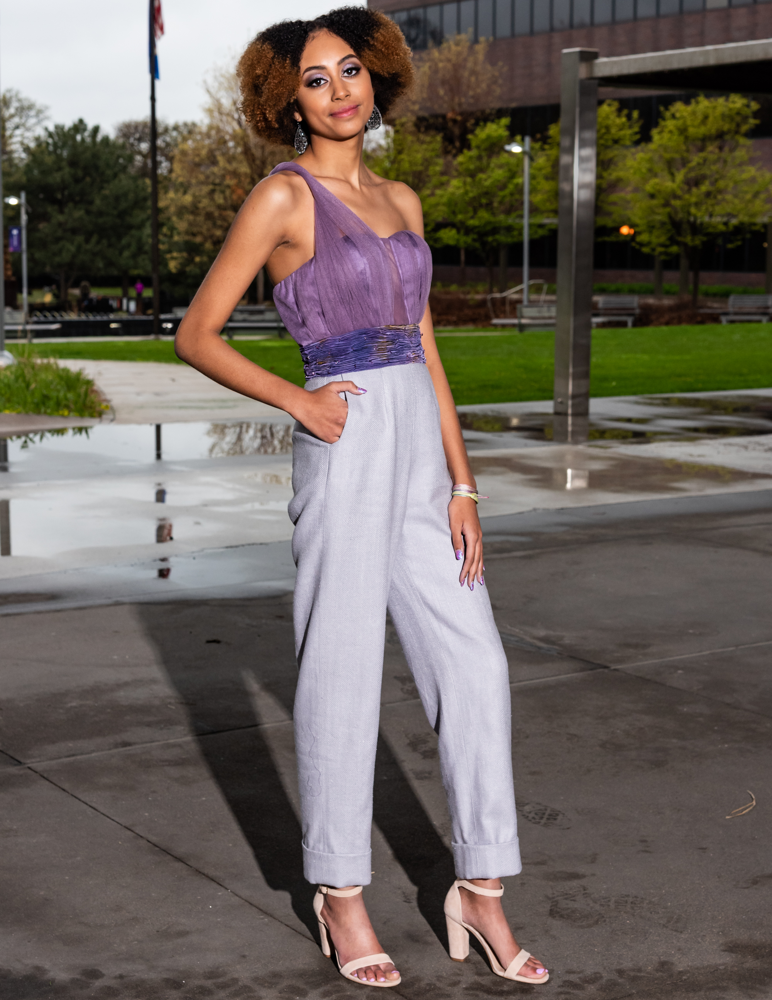
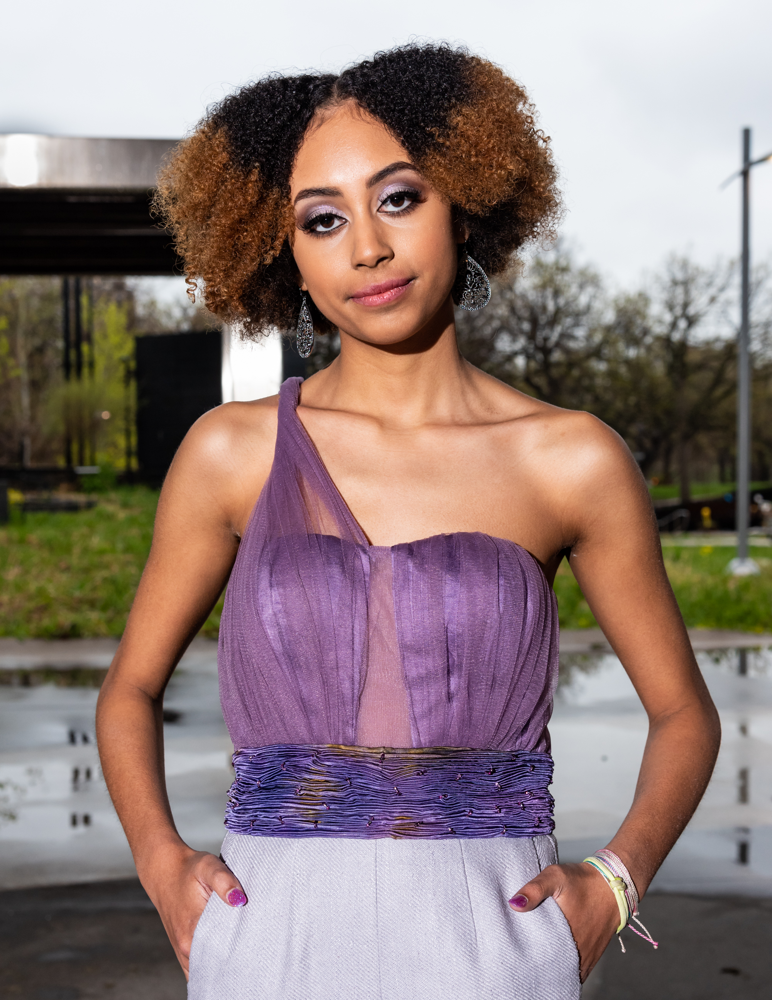
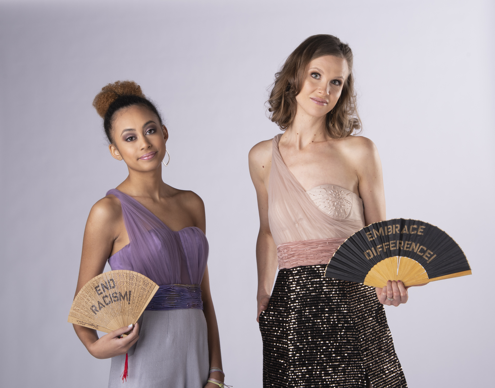
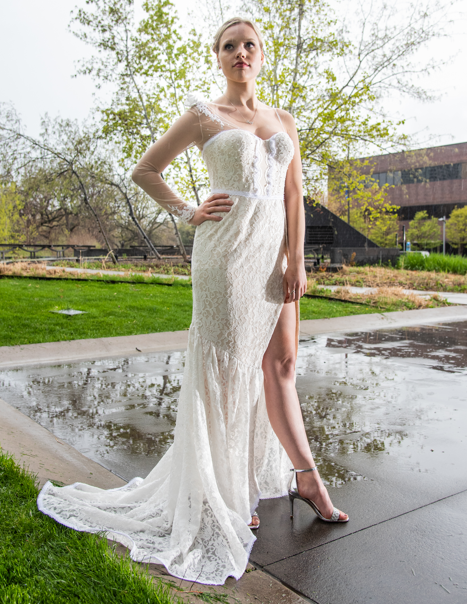
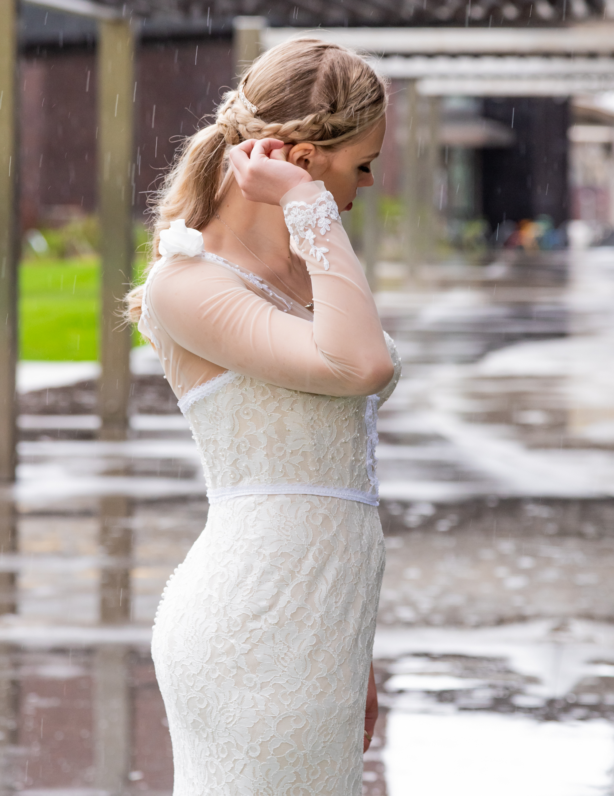
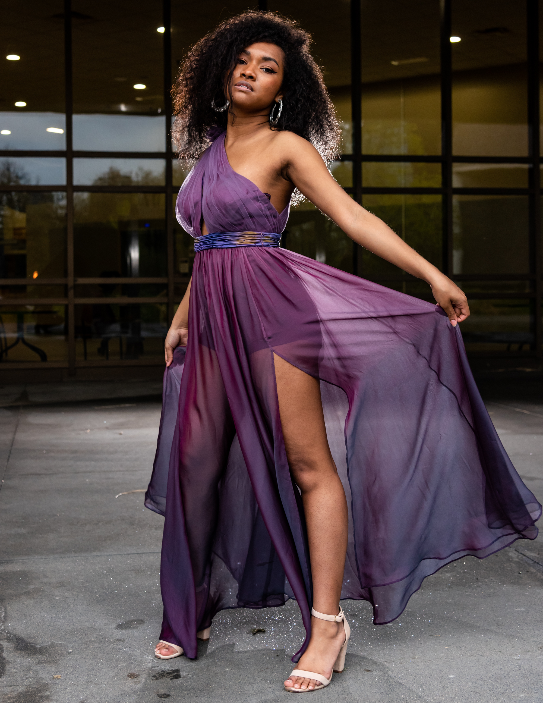
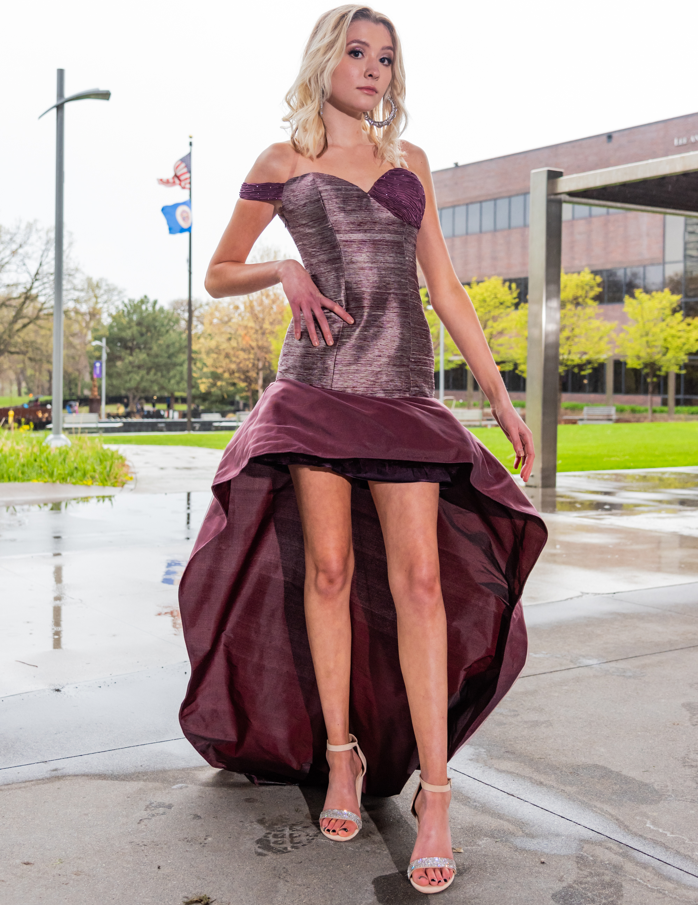
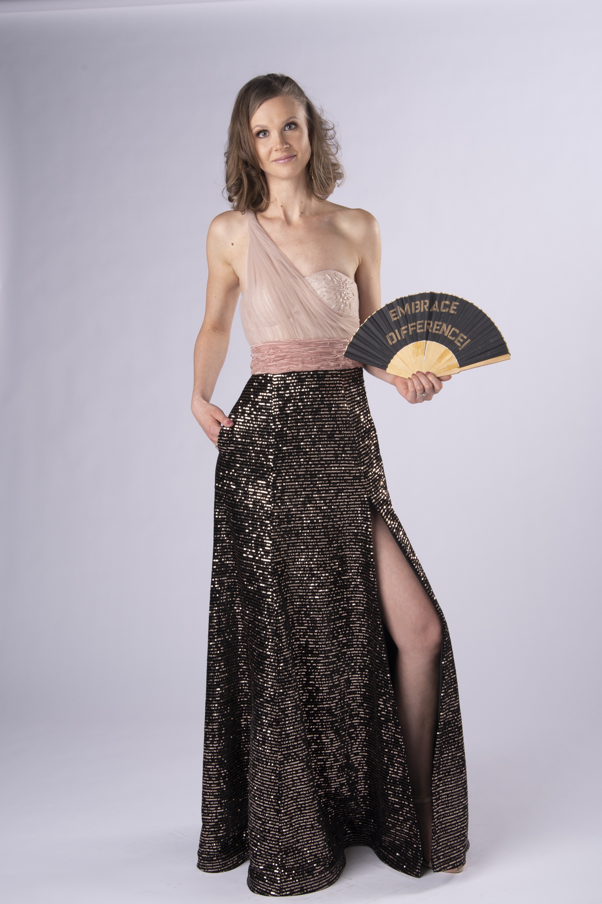

Duchesse satin corset top with a single shoulder strap of pleated tulle and pants, embellished with beads and a shibori waistband.

Duchesse satin corset top with a single shoulder strap of pleated tulle and pants, embellished with beads and a shibori waistband.

Duchesse satin corset top with a single shoulder strap of pleated tulle and pants, embellished with beads and a shibori waistband. Pleated tulle over silk dupioni corset with high-waisted beaded shibori band and A-line paneled skirt.

Ivory lace mermaid wedding dress with one sleeve, embellished with pearls and flowers.

Ivory lace mermaid wedding dress with one sleeve, embellished with pearls and flowers.

Asymmetric tulle-pleated top with beaded shibori waistband and gathered silk chiffon skirt.

Burgundy silk shantung princess-line dress with one sleeve band and asymmetric skirt with train, embellished with beaded shibori over one side of the bust.

Pleated tulle over silk dupioni corset with high-waisted beaded shibori band and A-line paneled skirt.